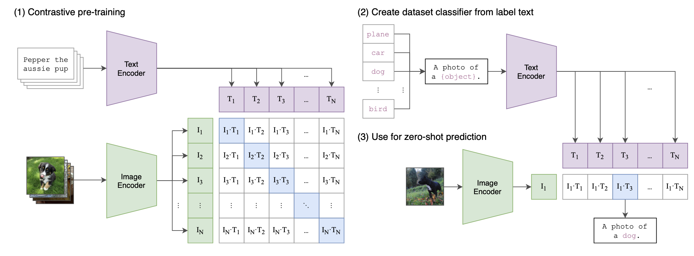

媒体与认知课程上机作业 • 基于 SigLIP 的小规模图文检索系统
本项目的核心目标是从零实现一个小规模图文检索系统，理解 CLIP 与 SigLIP 在损失函数上的本质差异。你将：
CLIP vs SigLIP 核心区别：CLIP 使用 softmax 对 batch 内所有图文对进行归一化（多分类），而 SigLIP 对每个图文对独立使用 sigmoid 判断是否匹配（二分类），因此对 batch size 更鲁棒。

整个模型由三部分组成：
| 组件 | 输入 | 输出 | 说明 |
|---|---|---|---|
图像编码器ResNet18 |
224×224 RGB 图像 | 256 维向量 | 自定义 ResNet18 提取特征 → 线性层映射到共享语义空间 |
文本编码器Transformer / MLP |
Token ID 序列 | 256 维向量 | Transformer（或 MLP 基线）提取文本表示 → 线性层映射到共享空间 |
SigLIP 损失SigLIPLoss |
图像嵌入 + 文本嵌入 | 标量损失 | 计算余弦相似度矩阵 → 逐对 sigmoid loss |
image_embeds；文本 → Transformer → text_embedscos_sim = image_embeds @ text_embeds.T，得到 B×B 的余弦相似度矩阵log(1 + exp(s_ij * (-t * z_ij + b)))，取均值设 batch 大小为 |B|，图像编码为 x_i，文本编码为 y_j，余弦相似度：
匹配标签（对角线为正样本，其余为负）：
其中 t 是可学习的温度系数（logit_scale），b 是可学习的偏置（logit_bias）。SigLIP 逐对损失：
整个 batch 的总损失：
repository/
├── train_siglip.py # 训练/验证/测试主入口
├── loss.py # SigLIP 损失函数
├── data_loader.py # 数据集加载（Flickr8k + 合成数据）
├── utils.py # 工具函数（Tokenizer、AverageMeter 等）
├── requirements.txt # Python 依赖
├── model_arch.png # 模型结构示意图
├── topk.png # Top-K 检索示例图
├── 算力平台运行指南.md # 清华算力平台使用说明
│
├── models/
│ ├── __init__.py # 导出 SigLIPModel
│ ├── resnet_custom.py # 自定义 ResNet18 图像编码器
│ ├── transformer_encoder.py # Transformer 文本编码器
│ └── siglip_model.py # 组装模型（图像+文本编码器）
│
├── Flickr8k/ # 数据集目录（不需要阅读）
│ ├── Images/ # 图片文件 *.jpg
│ ├── captions.txt # 全部标注
│ ├── train_captions.txt # 训练集标注
│ ├── val_captions.txt # 验证集标注
│ └── test_captions.txt # 测试集标注
│
└── visualization/ # 预训练模型可视化演示
├── app.py # Gradio 交互式界面
├── config.py # 全局配置
├── requirements.txt # 可视化专用依赖
├── data/
│ └── flickr8k_loader.py # Flickr8K 数据加载（HF 或本地）
├── model/
│ └── siglip_wrapper.py # SigLIP 预训练模型封装
└── viz/
└── v1_similarity_matrix.py # 相似度矩阵热力图
train_siglip.py — 训练入口 含 TODO整个项目的核心脚本，完成以下功能：
parse_args）：配置数据路径、模型参数、训练超参等build_dataloaders）：根据 --dry-run 选择合成数据或 Flickr8k 真实数据train_one_epoch）：前向传播 → 计算损失 → 梯度裁剪 → 更新参数evaluate_loss）：计算验证/测试集上的 SigLIP lossevaluate_retrieval）：**需要你实现** 计算 t2i / i2t 的 Recall@1/5/10save_checkpoint / load_training_state）：保存最佳模型和最新模型主函数 main() 的流程：解析参数 → 构建数据 → 创建模型/优化器 → 逐轮训练+验证 → 最终测试。
loss.py — SigLIP 损失函数 含 TODO定义了 SigLIPLoss 类：
logit_scale：可学习参数，初始值 log(10.0) ≈ 2.303，即温度系数 t 的对数logit_bias：可学习参数，初始值 -10.0forward(image_embeds, text_embeds)：**需要你实现**
models/resnet_custom.py — ResNet18 图像编码器 含 TODO自定义的 ResNet18，ResNet18 类本身已完整实现，但其中的 BasicBlock 需要你填写：
__init__中：定义 conv1、bn1、conv2、bn2、reluforward已给出：残差连接逻辑 out = relu(bn2(conv2(relu(bn1(conv1(x))))) + identity)ResNet18 的结构：stem(conv7×7+bn+relu+maxpool) → layer1~4(各含2个BasicBlock) → adaptive_avg_pool → fc(映射到 embed_dim=256)。
models/transformer_encoder.py — Transformer 文本编码器 含 TODOTransformerTextEncoder 类：
forward(input_ids)：**需要你实现**
models/siglip_model.py — 模型组装 已完整包含两个文本编码器选项：
MLPTextEncoder：轻量基线（embedding → mean pooling → 两层 MLP），已完整实现SigLIPModel：组装 ResNet18 + 文本编码器，返回 (image_embeds, text_embeds)，已完整实现data_loader.py — 数据加载 已完整提供两个 Dataset 类：
Flickr8kDataset：读取真实 Flickr8k 图像+标注，支持训练/验证增强SyntheticPairDataset：生成确定性合成数据，用于无图片时的代码验证（--dry-run）utils.py — 工具函数 已完整SimpleTokenizer：词级分词器，构建词表、编码文本为 token ID 序列（pad/unk/truncation）read_caption_file：读取 CSV 格式的标注文件AverageMeter：滑动平均工具set_seed：全局随机种子设置visualization/ — 预训练模型可视化 已完整基于 google/siglip-base-patch16-224 预训练模型的交互式演示：
app.py：Gradio Web 界面，点击按钮即可采样图文对并生成 N×N 相似度热力图model/siglip_wrapper.py：封装预训练模型的图像/文本编码和相似度计算data/flickr8k_loader.py：支持 HuggingFace 自动下载或本地加载 Flickr8kviz/v1_similarity_matrix.py：用 Plotly 生成交互式热力图（悬停查看图文）观察要点：对角线（正样本对）颜色应明显亮于非对角线；正/负样本对比倍数应 > 2×。
整个项目有两个独立入口，对应两条完全不同的执行路径：
| 入口文件 | 用途 | 是否需要你写代码 |
|---|---|---|
train_siglip.py |
训练/验证/测试你自己实现的模型 | 是 — 需要实现 4 个 TODO |
visualization/app.py |
体验 Google 预训练模型的图文相似度 | 否 — 代码已完整，只需运行 |
两条路径之间没有代码调用关系，下面分别展示。
当你运行 python train_siglip.py 时，代码的调用链如下：
图中箭头表示"调用"方向，从上到下对应调用层次。各层职责：
| 层次 | 文件 | 被谁调用 | 调用了谁 |
|---|---|---|---|
| 入口层 | train_siglip.py |
命令行直接运行 | utils.py — 导入 SimpleTokenizer, read_caption_file, AverageMeter, set_seed |
data_loader.py — 导入 Flickr8kDataset, SyntheticPairDataset, build_transform |
|||
models/ — 通过 from models import SigLIPModel 间接导入 |
|||
loss.py — 导入 SigLIPLoss |
|||
| 数据层 | data_loader.py |
train_siglip.py |
utils.py — 导入 read_caption_file |
| 模型层 | models/siglip_model.py |
train_siglip.py（经由 models/__init__.py） |
resnet_custom.py — 导入 ResNet18transformer_encoder.py — 导入 TransformerTextEncoder |
models/__init__.py |
train_siglip.py |
siglip_model.py — 导入 SigLIPModel 并重新导出 |
|
| 损失层 | loss.py |
train_siglip.py |
无（纯计算模块，不依赖其他项目文件） |
| 基础层 | utils.py |
train_siglip.py、data_loader.py |
无（纯工具模块） |
下面以 main() 函数的执行顺序，逐行展示关键的调用关系：
main() # train_siglip.py:200
│
├── parse_args() # train_siglip.py:16
│
├── set_seed(args.seed) # utils.py:16
│
├── build_dataloaders(args) # train_siglip.py:46
│ ├── read_caption_file(...) # utils.py:55
│ ├── SimpleTokenizer(...) # utils.py:23
│ │ └── build_vocab(...) # utils.py:32
│ ├── Flickr8kDataset(...) # data_loader.py:31
│ │ ├── read_caption_file(...) # utils.py:55
│ │ └── build_transform(...) # data_loader.py:12
│ └── SyntheticPairDataset(...) # data_loader.py:55 (仅 --dry-run)
│
├── SigLIPModel(vocab_size, embed_dim, ...) # models/siglip_model.py:28
│ ├── ResNet18(width, output_dim) # models/resnet_custom.py:23
│ │ └── BasicBlock(in_ch, out_ch, ...) # models/resnet_custom.py:5
│ └── TransformerTextEncoder(...) # models/transformer_encoder.py:21
│ └── PositionalEncoding(...) # models/transformer_encoder.py:7
│ 或 MLPTextEncoder(...) # models/siglip_model.py:7
│
├── SigLIPLoss() # loss.py:6
│
├── AdamW(model.parameters() + criterion.parameters())
│
└── for epoch in range(start_epoch, epochs+1):
│
├── train_one_epoch(model, criterion, loader, optimizer, device)
│ │ # 每个 batch:
│ ├── model(images, input_ids) # SigLIPModel.forward
│ │ ├── model.image_encoder(images) # ResNet18.forward
│ │ └── model.text_encoder(input_ids) # Transformer.forward / MLP.forward
│ ├── criterion(image_embeds, text_embeds) # SigLIPLoss.forward ★TODO
│ ├── loss.backward()
│ ├── clip_grad_norm_(model.parameters(), max_norm=1.0)
│ └── optimizer.step()
│
├── evaluate_loss(model, criterion, loader, device)
│ └── model(...) → criterion(...) # 同上，仅无梯度
│
├── evaluate_retrieval(model, loader, device) # ★TODO
│ └── model(images, input_ids) → 计算 sim 矩阵 → Recall@K
│
└── save_checkpoint(...) # 保存 best/latest .pt| 文件 | import 来源 | 导入的内容 |
|---|---|---|
train_siglip.py |
data_loader |
Flickr8kDataset, SyntheticPairDataset, build_transform |
train_siglip.py |
loss |
SigLIPLoss |
train_siglip.py |
models |
SigLIPModel（经由 models/__init__.py 重新导出） |
train_siglip.py |
utils |
AverageMeter, SimpleTokenizer, read_caption_file, set_seed |
data_loader.py |
utils |
read_caption_file |
models/__init__.py |
models.siglip_model |
SigLIPModel |
models/siglip_model.py |
.resnet_custom |
ResNet18 |
models/siglip_model.py |
.transformer_encoder |
TransformerTextEncoder |
当你运行 python visualization/app.py 时，走的是一条完全独立的路径，使用 Google 预训练模型而非你自己实现的模型：
app.py # visualization/app.py
│
├── SigLIPWrapper() # model/siglip_wrapper.py
│ ├── AutoProcessor.from_pretrained(MODEL_NAME) # transformers 库
│ ├── AutoModel.from_pretrained(MODEL_NAME) # transformers 库
│ └── 提取 vision_model / text_model / projections
│
├── load_flickr8k(split="train", n_samples=1000) # data/flickr8k_loader.py
│ ├── _load_local(...) # 本地 Flickr8k/ 目录
│ └── _load_hf(...) # HuggingFace tsystems/flickr8k
│
└── cb_resample(n_pairs) # 用户点击按钮的回调
├── random.sample(FLICKR_SAMPLES, n) # 随机采样图文对
├── create_similarity_heatmap(images, captions, MODEL) # viz/v1_similarity_matrix.py
│ ├── MODEL.encode_images(images) # SigLIPWrapper.encode_images
│ ├── MODEL.encode_texts(captions) # SigLIPWrapper.encode_texts
│ └── MODEL.compute_similarity(img_emb, txt_emb) # 计算 sigmoid 相似度
└── _make_gallery_html(images, captions) # 生成图文卡片 HTMLtrain_siglip.py）和可视化管线（visualization/app.py）是完全独立的两个程序。训练管线使用你自己实现的 ResNet18 + Transformer + SigLIP Loss，而可视化管线使用 Google 预训练的 SigLIP 模型。两者不共享任何模型权重或代码。以下按照从底层到上层的顺序（即被调用者 → 调用者），逐文件、逐函数地解释每段代码在做什么、为什么这样写。如果你是第一次用 PyTorch 写模型，建议按此顺序阅读。
utils.py — 最底层的工具函数这个文件是整个项目的基础设施，所有其他文件都会用到它。它不涉及任何神经网络逻辑，只提供数据处理和辅助功能。
PAD_TOKEN = "<PAD>"
UNK_TOKEN = "<UNK>"做什么：定义两个特殊标记。PAD 是填充符，因为不同句子长度不同，需要用 PAD 把短句子补齐到统一长度；UNK 是未知词标记，当遇到词表中没有的词时用 UNK 代替。
类比：就像填表时，空格子填"无"（PAD），不会读的字填"?"（UNK）。
set_seed(seed)def set_seed(seed: int) -> None:
random.seed(seed)
np.random.seed(seed)
torch.manual_seed(seed)
torch.cuda_manual_seed_all(seed)做什么：设置 Python、NumPy、CPU PyTorch、GPU PyTorch 四个库的随机种子为同一个值。这样每次运行程序产生的随机数序列都相同，结果可复现。
为什么需要：神经网络训练中有大量随机操作（数据打乱、权重初始化、dropout）。如果不设种子，每次跑出来的结果不同，就没法对比实验了。
SimpleTokenizer 类 — 文本分词器整体作用：把一句英文文字（如 "a dog running on grass"）变成一串数字（如 [3, 15, 82, 7, 45]），让神经网络能处理。整个过程可以类比"翻译"：文字 → 数字编号。
__init__(captions, min_freq=2, max_len=32)self.max_len = max_len
self.word2idx: Dict[str, int] = {PAD_TOKEN: 0, UNK_TOKEN: 1}
self.idx2word: List[str] = [PAD_TOKEN, UNK_TOKEN]
self.build_vocab(captions, min_freq)做什么：初始化一个空的"字典"（word2idx）。先把 PAD 映射为 0，UNK 映射为 1，然后调用 build_vocab 把训练集中出现的词按频率加入字典。
类比：你在编一本"英汉小词典"，前两页固定是：第 0 页 = PAD，第 1 页 = UNK。后面每页记录一个真实单词和它的编号。
build_vocab(captions, min_freq)counter = Counter()
for caption in captions:
counter.update(self.tokenize(caption))
for word, freq in counter.most_common():
if freq >= min_freq and word not in self.word2idx:
self.word2idx[word] = len(self.idx2word)
self.idx2word.append(word)做什么：
tokenize 把每句拆成单词列表Counter 统计每个单词出现的次数min_freq 次的词（太稀有的词没有足够训练样本，不如直接当 UNK）为什么 min_freq=2：如果一个词只在全数据集出现 1 次，模型几乎学不到它的含义。删掉它反而让模型更聚焦于常见词。
tokenize(text)def tokenize(self, text: str) -> List[str]:
return re.findall(r"[a-z0-9']+", text.lower())做什么：把 "A dog is running!" 变成 ["a", "dog", "is", "running"]。步骤是：先转小写，再用正则表达式提取所有由小写字母、数字、单引号组成的连续片段。标点符号和空格被丢弃。
encode(text)token_ids = [self.word2idx.get(token, self.word2idx[UNK_TOKEN]) for token in tokens]
token_ids = token_ids[: self.max_len]
token_ids += [self.word2idx[PAD_TOKEN]] * (self.max_len - len(token_ids))
return token_ids做什么：这是分词器的核心方法，将一句话变成定长的数字序列。三步：
word2idx 查编号，找不到的用 UNK 的编号（1）代替max_len=32 个词，只保留前 32 个为什么必须定长：PyTorch 的 DataLoader 要求一个 batch 内所有样本形状相同。不同句子长度不同，所以必须截断+补齐。
举例："a dog" → [3, 15, 0, 0, 0, ..., 0]（长度 32，后面 30 个都是 PAD）
__len__()return len(self.idx2word)做什么：返回词表大小。后面创建模型时需要知道词表大小来初始化 embedding 层（每个词需要一行向量）。
read_caption_file(path)rows = []
with open(path, "r", encoding="utf-8") as f:
reader = csv.reader(f)
for row in reader:
if len(row) < 2: continue
image_id = row[0].strip()
caption = ",".join(row[1:]).strip()
if image_id and caption:
rows.append({"image_id": image_id, "caption": caption})
return rows做什么：读取标注文件。Flickr8k 的标注文件是 CSV 格式，每行两列：第一列是图片文件名（如 1000268201_693b08cb0e.jpg），第二列是描述文字（如 A child in a pink dress is climbing...)）。因为描述中可能含有逗号，所以用 ",".join(row[1:]) 把第二列之后的所有内容合并，避免误拆。
输出：一个列表，每项是字典 {"image_id": "xxx.jpg", "caption": "xxx"}。
AverageMeter 类@dataclass
class AverageMeter:
total: float = 0.0
count: int = 0
def update(self, value: float, n: int = 1) -> None:
self.total += value * n
self.count += n
@property
def avg(self) -> float:
return self.total / max(1, self.count)做什么：计算"滑动平均"。训练时每步都会产出一个 loss 值，我们需要知道整个 epoch 的平均 loss。update 每次传入一个值和它对应的样本数量 n，累加到 total 和 count。avg 返回 total / count。
为什么 value * n：如果一个 batch 有 64 张图、loss=0.5，那么总误差贡献是 0.5×64=32。直接累加 loss 再除以总图片数，才是真正的平均。
data_loader.py — 数据加载这个文件把原始数据（图片文件 + 文字标注）包装成 PyTorch 的 Dataset 对象，方便 DataLoader 按 batch 加载。
build_transform(image_size=224, train=True)if train:
return T.Compose([
T.Resize((image_size, image_size)),
T.RandomHorizontalFlip(p=0.5),
T.ToTensor(),
T.Normalize(mean=(0.485, 0.456, 0.406), std=(0.229, 0.224, 0.225)),
])
return T.Compose([
T.Resize((image_size, image_size)),
T.ToTensor(),
T.Normalize(mean=(0.485, 0.456, 0.406), std=(0.229, 0.224, 0.225)),
])做什么：创建图像预处理流程。T.Compose 把多个变换串联起来，依次执行：
Resize：把任意大小的图片缩放到 224×224（因为 ResNet18 输入固定 224×224）RandomHorizontalFlip(p=0.5)：仅训练时，50% 概率水平翻转图片。这是数据增强：让模型见到更多样化的图片，防止过拟合。验证/测试时不做翻转（否则结果不稳定）ToTensor：把 PIL Image（H×W×3，值 0~255）变成 PyTorch tensor（3×H×W，值 0~1）Normalize：对每个通道做标准化 (x - mean) / std。这里的 mean/std 是 ImageNet 数据集的统计值，因为 ResNet 是在 ImageNet 上预训练的（虽然这里我们从头训练，但沿用 ImageNet 标准仍是惯例）类比：就像拍照前要统一尺寸（Resize）、有时翻个面增加角度多样性（Flip）、把 RGB 值从 0~255 映射到 0~1（ToTensor）、最后校准色彩偏差（Normalize）。
Flickr8kDataset 类__init__(image_root, captions_file, tokenizer, transform)self.image_root = image_root
self.tokenizer = tokenizer
self.transform = transform or build_transform(train=True)
self.rows = read_caption_file(captions_file)做什么：记住图片目录路径、分词器、图像变换函数，用 read_caption_file 读取标注文件得到所有 (image_id, caption) 对。每个标注对就是一个数据样本。
注意：Flickr8k 中同一张图片有 5 条不同的 caption，所以标注文件中同一个 image_id 会出现 5 次，每条都是一个独立的训练样本。
__len__()return len(self.rows)做什么：返回数据集大小（标注对的数量）。DataLoader 需要知道总共有多少样本。
__getitem__(idx)row = self.rows[idx]
image_path = os.path.join(self.image_root, row["image_id"])
image = Image.open(image_path).convert("RGB")
image = self.transform(image)
input_ids = torch.tensor(self.tokenizer.encode(row["caption"]), dtype=torch.long)
return {
"image": image,
"input_ids": input_ids,
"image_id": row["image_id"],
"caption": row["caption"],
}做什么：这是 Dataset 的核心方法。给定索引 idx，取出一条标注，然后：
为什么返回字典：DataLoader 会把多个 __getitem__ 的结果自动拼成一个 batch。字典的每个 key 会被拼成 batch 级的张量。这样训练时可以方便地用 batch["image"] 取图片、batch["input_ids"] 取文字。
SyntheticPairDataset 类做什么：当没有 Flickr8k 图片时（--dry-run 模式），用程序生成假数据来验证代码能跑通。不需要真图片，不需要真文字。
__init__(tokenizer, size=256, image_size=64, num_concepts=32)做什么：size 是数据集大小（256 个样本），image_size 是假图片分辨率（64×64），num_concepts 是"概念"数量（32 个不同类别）。每个概念对应一种独特的假图片+假文字。
__getitem__(idx)concept = idx % self.num_concepts
generator = torch.Generator().manual_seed(concept)
image = torch.rand((3, self.image_size, self.image_size), generator=generator)
image[0].mul_((concept + 1) / self.num_concepts)
image[1].mul_(1.0 - concept / self.num_concepts)
caption = f"synthetic object {concept}"
input_ids = torch.tensor(self.tokenizer.encode(caption), dtype=torch.long)做什么：
idx % 32 决定这个样本属于哪个概念（0~31 循环）"synthetic object 0" ~ "synthetic object 31"为什么这样做：假数据虽然不真实，但关键是同一概念的图和文字是关联的（concept 5 的图配 concept 5 的文字），不同概念的图和文字是不匹配的。这让 SigLIP loss 有东西可学：模型应该学会让匹配对的相似度高、不匹配的低。
models/resnet_custom.py — 图像编码器ResNet18 是一个经典的图像分类网络，这里我们把它改造成特征提取器：不输出"是猫还是狗"的分类，而是输出一个 256 维的向量（嵌入），代表这张图的语义。
BasicBlock 类 — ResNet 的基本积木块 含 TODOResNet 的核心思想：普通深度网络很难训练（梯度消失）。ResNet 的解决方案是残差连接（skip connection）：让数据不只走主路 conv→bn→conv→bn，还能走一条捷径直接跳过去。最终输出 = 主路输出 + 原始输入。即使主路学不到有用的东西，捷径至少能保底。
__init__(in_channels, out_channels, stride=1, downsample=None) TODO需要你填什么：五个层
| 层 | 作用 | 参数说明 |
|---|---|---|
conv1 | 第一个 3×3 卷积 | in_channels → out_channels，stride 可以是 1 或 2（stride=2 时图片尺寸减半），bias=False（因为后面紧跟 BN，BN 会消除 bias 的效果） |
bn1 | 第一个 BatchNorm | out_channels 个通道各一组统计参数 |
conv2 | 第二个 3×3 卷积 | out_channels → out_channels，stride 固定 1，bias=False |
bn2 | 第二个 BatchNorm | out_channels |
relu | 激活函数 | inplace=True 节省内存（直接在原张量上修改，不新建） |
downsample 参数不是你要创建的，它由外部的 _make_layer 传入。当主路改变了通道数或空间尺寸时，捷径也需要用 downsample（一个 1×1 卷积+BN）来对齐，否则 out + identity 会因为形状不同而无法相加。
forward(x) 已给出identity = x
out = self.relu(self.bn1(self.conv1(x)))
out = self.bn2(self.conv2(out))
if self.downsample is not None:
identity = self.downsample(x)
out = self.relu(out + identity)
return out逐行解释：
identity = x：记住原始输入，后面要加回来（残差连接）out = relu(bn1(conv1(x)))：主路第一段 — 卷积 → 批归一化 → 激活out = bn2(conv2(out))：主路第二段 — 卷积 → 批归一化（注意这里没有 relu，relu 放在加完 identity 之后）if downsample: identity = downsample(x)：如果捷径需要对齐形状，就过一下 downsampleout = relu(out + identity)：残差连接！主路结果 + 捷径 = 最终输出，再过一次 reluResNet18 类 已完整__init__(width=32, output_dim=256)self.conv1 = nn.Conv2d(3, width, kernel_size=7, stride=2, padding=3, bias=False)
self.bn1 = nn.BatchNorm2d(width)
self.relu = nn.ReLU(inplace=True)
self.maxpool = nn.MaxPool2d(kernel_size=3, stride=2, padding=1)
self.layer1 = self._make_layer(width, 2, stride=1)
self.layer2 = self._make_layer(width*2, 2, stride=2)
self.layer3 = self._make_layer(width*4, 2, stride=2)
self.layer4 = self._make_layer(width*8, 2, stride=2)
self.avgpool = nn.AdaptiveAvgPool2d((1, 1))
self.fc = nn.Linear(width*8, output_dim)逐层解释：
| 层 | 输入尺寸 | 输出尺寸 | 作用 |
|---|---|---|---|
conv1 | 3×224×224 | width×112×112 | Stem 卷积：7×7 大核看全局，stride=2 把尺寸减半 |
bn1 + relu | width×112×112 | width×112×112 | 归一化 + 激活 |
maxpool | width×112×112 | width×56×56 | 最大池化再减半 |
layer1 | width×56×56 | width×56×56 | 2 个 BasicBlock，通道不变，尺寸不变 |
layer2 | width×56×56 | width*2×28×28 | 2 个 BasicBlock，通道翻倍，尺寸减半 |
layer3 | width*2×28×28 | width*4×14×14 | 通道再翻倍，尺寸再减半 |
layer4 | width*4×14×14 | width*8×7×7 | 通道再翻倍，尺寸再减半 |
avgpool | width*8×7×7 | width*8×1×1 | 全局平均池化：把 7×7 压成 1×1，只剩通道维度 |
fc | width*8 | 256 | 线性层：把特征映射到语义空间 |
width=32 时，最终通道数是 32×8=256，恰好等于 output_dim=256。但 fc 层仍然存在，它的作用不是改变维度，而是从图像特征空间映射到图文共享的语义空间。
_make_layer(out_channels, blocks, stride)downsample = None
if stride != 1 or self.in_channels != out_channels:
downsample = nn.Sequential(
nn.Conv2d(self.in_channels, out_channels, kernel_size=1, stride=stride, bias=False),
nn.BatchNorm2d(out_channels),
)
layers = [BasicBlock(self.in_channels, out_channels, stride, downsample)]
self.in_channels = out_channels
for _ in range(1, blocks):
layers.append(BasicBlock(out_channels, out_channels))
return nn.Sequential(*layers)做什么：构建一个 stage（由 blocks 个 BasicBlock 组成）。
nn.Sequential 把所有块串起来forward(x)x = self.relu(self.bn1(self.conv1(x)))
x = self.maxpool(x)
x = self.layer1(x)
x = self.layer2(x)
x = self.layer3(x)
x = self.layer4(x)
x = self.avgpool(x)
x = torch.flatten(x, 1)
return self.fc(x)做什么：一张图片从 224×224 的像素矩阵，经过层层处理，最终变成一个 256 维的向量。就像把一张照片不断缩小+提炼，最后只保留最精华的 256 个数字。
torch.flatten(x, 1)：把 [batch, 256, 1, 1] 变成 [batch, 256]，只展平从第 1 维开始往后的所有维度（保留 batch 维）。
models/transformer_encoder.py — 文本编码器Transformer 是当前最主流的文本处理架构。这里的文本编码器把一串 token ID（如 [3, 15, 0, 0, ...]）变成一个 256 维向量。
PositionalEncoding 类__init__(embed_dim, max_len=128)position = torch.arange(max_len).float().unsqueeze(1)
div_term = torch.exp(torch.arange(0, embed_dim, 2).float() * (-math.log(10000.0) / embed_dim))
pe = torch.zeros(max_len, embed_dim)
pe[:, 0::2] = torch.sin(position * div_term)
pe[:, 1::2] = torch.cos(position * div_term)
self.register_buffer("pe", pe.unsqueeze(0), persistent=False)做什么：Transformer 本身没有"位置感知"能力 — 它把输入序列看成一组无序的词。PositionalEncoding 给每个位置注入一个独特的"位置指纹"（sin/cos 波），让模型能区分"dog 在第 2 个位置"和"dog 在第 8 个位置"。
具体做法：
register_buffer：把这个矩阵存起来但不当作模型参数（不会被优化器更新）。unsqueeze(0) 在前面加一个 batch 维度，变成 [1, max_len, embed_dim]。
forward(x)return x + self.pe[:, : x.size(1)]做什么：把位置编码加到输入 embedding 上。只截取前 x.size(1) 个位置（因为实际序列长度可能小于 max_len）。这就是"注入位置信息" — 不替换原始 embedding，而是叠加。
TransformerTextEncoder 类 含 TODO__init__(vocab_size, embed_dim=256, num_heads=4, num_layers=2, max_len=32, padding_idx=0)self.padding_idx = padding_idx
self.token_embedding = nn.Embedding(vocab_size, embed_dim, padding_idx=padding_idx)
self.positional_encoding = PositionalEncoding(embed_dim, max_len=max_len)
layer = nn.TransformerEncoderLayer(
d_model=embed_dim, nhead=num_heads,
dim_feedforward=embed_dim*4, dropout=0.1,
batch_first=True, activation="gelu", norm_first=True,
)
self.encoder = nn.TransformerEncoder(layer, num_layers=num_layers)
self.proj = nn.Linear(embed_dim, embed_dim)逐层解释：
| 组件 | 做什么 |
|---|---|
token_embedding |
词嵌入层：把每个 token ID 变成 256 维向量。vocab_size 行（每个词一行），embed_dim=256 列。padding_idx=0 让 PAD 对应的嵌入向量始终为零（不参与学习） |
PositionalEncoding |
上面刚解释过的位置编码 |
TransformerEncoderLayer |
Transformer 的一层：self-attention（让每个词关注序列中所有词）+ feed-forward（两层 MLP）。num_heads=4 是多头注意力的头数。dim_feedforward=1024 是 FFN 的隐藏层大小。norm_first=True 是 Pre-LN（先归一化再 attention，训练更稳定） |
TransformerEncoder |
堆叠 num_layers=2 个 EncoderLayer |
proj |
线性投影：把 Transformer 输出的 256 维映射到另一个 256 维（语义空间）。虽然维度相同，但这是一个新的学习空间 |
forward(input_ids) TODO你需要实现的完整流程（参考第六章 TODO 详解）：
token_embedding(input_ids) — 把 [B, 32] 的 ID 变成 [B, 32, 256] 的嵌入矩阵positional_encoding(x) — 在嵌入上叠加位置指纹padding_mask = input_ids.eq(padding_idx) — 找出哪些位置是 PAD，Transformer 应该忽略它们encoder(x, src_key_padding_mask=padding_mask) — 让每个词和其他词交互，理解上下文语义proj(x) — 映射到共享语义空间models/siglip_model.py — 模型组装MLPTextEncoder 类__init__(vocab_size, embed_dim=256, padding_idx=0)self.padding_idx = padding_idx
self.embedding = nn.Embedding(vocab_size, embed_dim, padding_idx=padding_idx)
self.net = nn.Sequential(
nn.Linear(embed_dim, embed_dim),
nn.GELU(),
nn.Linear(embed_dim, embed_dim),
)做什么：一个最简单的文本编码器。只有三步：词嵌入 → 两层 MLP（Linear → GELU激活 → Linear）。没有 Transformer 的注意力机制，不能理解词与词之间的关系，但简单、快速。
forward(input_ids)padding_mask = input_ids.eq(self.padding_idx)
valid = (~padding_mask).unsqueeze(-1).float()
x = self.embedding(input_ids)
pooled = (x * valid).sum(dim=1) / valid.sum(dim=1).clamp_min(1.0)
return self.net(pooled)逐行解释：
padding_mask：找出哪些位置是 PADvalid：反过来，标记哪些位置是有意义的词（float 型，1.0=有效，0.0=padding）embedding(input_ids)：词嵌入 — [B, 32] 变 [B, 32, 256](x * valid).sum(dim=1) / valid.sum(dim=1)：加权均值池化。乘以 valid 把 PAD 位置的向量清零，sum 求和只累积有效词，除以有效词数量取平均。得到 [B, 256]self.net(pooled)：过两层 MLP，得到最终文本嵌入为什么 clamp_min(1.0)：防止全 padding 的句子（虽然不太可能出现）导致除以 0。
SigLIPModel 类 — 组装图像+文本编码器__init__(vocab_size, embed_dim=256, image_width=32, text_encoder="transformer", max_len=32)self.image_encoder = ResNet18(width=image_width, output_dim=embed_dim)
if text_encoder == "transformer":
self.text_encoder = TransformerTextEncoder(vocab_size, embed_dim=embed_dim, max_len=max_len)
elif text_encoder == "mlp":
self.text_encoder = MLPTextEncoder(vocab_size, embed_dim=embed_dim)
else:
raise ValueError(...)做什么：根据 text_encoder 参数选择文本编码器类型，同时创建图像编码器。两个编码器的输出维度都是 embed_dim=256，这样才能在同一空间计算相似度。
forward(images, input_ids)image_embeds = self.image_encoder(images)
text_embeds = self.text_encoder(input_ids)
return image_embeds, text_embeds做什么：分别编码图像和文本，返回两个 256 维嵌入。注意这里不做归一化 — 归一化在 loss 函数里做。
loss.py — SigLIP 损失函数 含 TODOSigLIPLoss 类__init__(init_logit_scale=10.0, init_logit_bias=-10.0)self.logit_scale = nn.Parameter(torch.log(torch.tensor(init_logit_scale)))
self.logit_bias = nn.Parameter(torch.tensor(init_logit_bias, dtype=torch.float32))做什么：创建两个可学习参数（nn.Parameter，会被优化器更新）：
logit_scale：存储的是 log(t)，初始值 log(10) ≈ 2.303。训练时通过 logit_scale.exp() 得到真正的温度系数 t。这样做是因为 t 必须为正数，而 exp() 的输出恒为正，不需要额外约束logit_bias：偏置 b，初始值 -10.0。初始时 t×z+b 的值偏负，sigmoid 输出接近 0，模型从"不确定"状态开始学习类比：温度 t 就像放大镜 — 把微小的相似度差异放大成明显的数值差异。偏置 b 就像基准线 — 决定"多相似才算匹配"。这两个参数都是模型自己学的，不需要你手动调。
forward(image_embeds, text_embeds) TODO你要实现什么：
F.normalize(x, dim=-1) 把每个向量缩放到单位长度。这保证余弦相似度的范围在 [-1, 1]image_embeds @ text_embeds.T 得到 [B, B] 的矩阵，第 (i,j) 元素就是第 i 张图和第 j 条文本的余弦相似度t * sim_matrix + b，把 [-1,1] 的相似度映射到更大范围的 logitslog(1 + exp(s_ij * (-t * z_ij + b)))。当 (i,j) 匹配时 s=+1，模型需要让 t*z+b 变大（sigmoid → 1）；不匹配时 s=-1，需要让 t*z+b 变小（sigmoid → 0）与 CLIP loss 的区别：CLIP 对每行/每列做 softmax（多分类，需要全局归一化），SigLIP 对每个格子独立做 sigmoid（二分类）。SigLIP 不依赖 batch 内其他样本的相对关系，所以对小 batch 也有效。
train_siglip.py — 训练主脚本这是整个项目的"大脑"，串联所有其他模块，完成完整的训练-验证-测试流程。
parse_args()parser = argparse.ArgumentParser(...)
parser.add_argument("--data-dir", default="Flickr8k")
parser.add_argument("--text-encoder", choices=["transformer", "mlp"], default="transformer")
parser.add_argument("--embed-dim", type=int, default=256)
parser.add_argument("--batch-size", type=int, default=64)
parser.add_argument("--epochs", type=int, default=10)
parser.add_argument("--lr", type=float, default=3e-4)
parser.add_argument("--dry-run", action="store_true")
parser.add_argument("--resume", default="")
...做什么：定义所有可以在命令行传入的超参数。常用的有：
| 参数 | 默认值 | 含义 |
|---|---|---|
--data-dir | Flickr8k | 数据集目录 |
--text-encoder | transformer | 文本编码器类型：transformer 或 mlp |
--batch-size | 64 | 每步处理的样本数 |
--epochs | 10 | 训练到第几轮 |
--lr | 3e-4 | 学习率 |
--dry-run | False | 使用合成假数据（不需要真实图片） |
--resume | "" | 从 checkpoint 继续训练的路径 |
build_dataloaders(args)if args.dry_run:
# 使用 SyntheticPairDataset 生成假数据
tokenizer = SimpleTokenizer(SyntheticPairDataset.captions(), min_freq=1, max_len=args.max_len)
train_dataset = SyntheticPairDataset(tokenizer, size=256, image_size=64)
...
else:
# 使用真实 Flickr8k 数据
all_rows = read_caption_file(os.path.join(args.data_dir, "captions.txt"))
tokenizer = SimpleTokenizer(...)
train_dataset = Flickr8kDataset(image_root=..., captions_file=..., tokenizer=tokenizer, ...)
...
train_loader = DataLoader(train_dataset, batch_size=args.batch_size, shuffle=True, ...)
val_loader = DataLoader(val_dataset, ...)
test_loader = DataLoader(test_dataset, ...)做什么：
dry_run 决定使用假数据还是真实数据read_caption_file 读全部标注，再用所有标注构建 tokenizer（词表必须覆盖所有数据）shuffle=True（训练时随机打乱顺序），drop_last=True（训练时丢弃最后不完整的 batch，因为 SigLIP loss 需要完整的 B×B 矩阵）为什么训练集 drop_last=True：如果最后一个 batch 只有 3 张图，相似度矩阵是 3×3 而非 64×64，梯度信号太弱且不稳定。
train_one_epoch(model, criterion, loader, optimizer, device)model.train()
criterion.train()
meter = AverageMeter()
for batch in tqdm(loader, desc="train", leave=False):
images = batch["image"].to(device, non_blocking=True)
input_ids = batch["input_ids"].to(device, non_blocking=True)
image_embeds, text_embeds = model(images, input_ids)
loss = criterion(image_embeds, text_embeds)
optimizer.zero_grad(set_to_none=True)
loss.backward()
torch.nn.utils.clip_grad_norm_(model.parameters(), max_norm=1.0)
optimizer.step()
meter.update(loss.item(), images.size(0))
return meter.avg逐行解释：
model.train() / criterion.train()：切换到训练模式（启用 dropout、BN 用 batch 统计而非全局统计）tqdm：进度条，让你看到训练进度batch["image"].to(device)：把数据搬到 GPU（non_blocking=True 异步传输，不阻塞主线程）model(images, input_ids)：前向传播 — 图像过 ResNet18，文本过 Transformer/MLPcriterion(image_embeds, text_embeds)：计算 SigLIP lossoptimizer.zero_grad(set_to_none=True)：清空上一步的梯度。set_to_none=True 比 zero() 更省内存loss.backward()：反向传播 — 自动计算每个参数对 loss 的影响（梯度）clip_grad_norm_(..., max_norm=1.0)：梯度裁剪 — 如果某个梯度太大（"爆炸"），把它截断到最大 1.0。防止训练不稳定optimizer.step()：更新参数 — 根据梯度调整每个权重（AdamW 算法）meter.update(loss.item(), images.size(0))：记录这一步的 loss类比：训练就像考试+纠错循环。做题（forward）→ 对答案算分（loss）→ 分析哪道题做错了（backward）→ 改学习方法（step）。梯度裁剪就是限制纠错的幅度，防止矫枉过正。
evaluate_loss(model, criterion, loader, device)@torch.no_grad()
model.eval()
criterion.eval()
meter = AverageMeter()
for batch in tqdm(loader, desc="eval-loss", leave=False):
...
loss = criterion(image_embeds, text_embeds)
meter.update(loss.item(), images.size(0))
return meter.avg做什么：和 train_one_epoch 类似，但只计算 loss 不更新参数。
@torch.no_grad()：关闭梯度计算，省内存、省时间model.eval()：切换到评估模式（关闭 dropout、BN 用全局统计）为什么 eval 模式不同：训练时 BN 用当前 batch 的均值/方差（每个 batch 不同），dropout 随机丢弃一些连接。评估时需要稳定、确定的结果，所以 BN 用训练时累积的全局均值/方差，dropout 全部关闭。
evaluate_retrieval(model, loader, device, topk=(1, 5, 10)) TODO做什么：计算检索指标 Recall@K。和 loss 不同，Recall 衡量的是实际检索效果：给你一条文字，能在前 K 张图中找到正确的那张吗？
思路：
详细实现参考第六章 TODO 详解。
save_checkpoint(path, model, criterion, optimizer, tokenizer, epoch, metrics, args, best_val_r1)os.makedirs(os.path.dirname(path), exist_ok=True)
torch.save({
"epoch": epoch,
"model": model.state_dict(),
"criterion": criterion.state_dict(),
"optimizer": optimizer.state_dict(),
"tokenizer_word2idx": tokenizer.word2idx,
"metrics": metrics,
"best_val_r1": best_val_r1,
"args": vars(args),
}, path)做什么：把训练过程中所有需要保存的东西打包存到 .pt 文件。
| 存的内容 | 为什么需要 |
|---|---|
model.state_dict() | 模型的所有权重 — 下次可以加载回来继续训练或做推理 |
criterion.state_dict() | logit_scale 和 logit_bias 的当前值 |
optimizer.state_dict() | 优化器的内部状态（Adam 的动量等），恢复后训练行为一致 |
tokenizer_word2idx | 词表 — 恢复时需要用完全相同的词表，否则 token ID 含义不同 |
epoch, metrics, best_val_r1 | 训练进度和最佳成绩 — 恢复时知道从第几轮继续、当前最优指标是多少 |
args | 所有超参数 — 恢复时确保模型结构（embed_dim、text_encoder 等）和训练时一致 |
main() — 训练的完整流程args = parse_args()
set_seed(args.seed)
device = torch.device("cuda" if torch.cuda.is_available() else "cpu")
tokenizer, train_loader, val_loader, test_loader = build_dataloaders(args)
model = SigLIPModel(vocab_size=len(tokenizer), embed_dim=args.embed_dim, ...).to(device)
criterion = SigLIPLoss().to(device)
optimizer = torch.optim.AdamW(
list(model.parameters()) + list(criterion.parameters()),
lr=args.lr, weight_decay=args.weight_decay,
)
for epoch in range(start_epoch, args.epochs + 1):
train_loss = train_one_epoch(model, criterion, train_loader, optimizer, device)
val_loss = evaluate_loss(model, criterion, val_loader, device)
val_metrics = evaluate_retrieval(model, val_loader, device)
val_r1 = val_metrics["t2i_R@1"]
if val_r1 > best_val_r1:
best_val_r1 = val_r1
save_checkpoint(..., "best_siglip.pt")
save_checkpoint(..., "latest_siglip.pt")
test_metrics = evaluate_retrieval(model, test_loader, device)做什么：训练的"总调度"。核心是一个 epoch 循环：
train_one_epoch），更新模型权重evaluate_loss + evaluate_retrieval），看验证集表现t2i_R@1 比之前更好，保存 best_siglip.pt（最优模型）latest_siglip.pt（方便断点续训）为什么优化器包含 criterion 参数：logit_scale 和 logit_bias 是 loss 函数的可学习参数，也需要被优化器更新。所以把 model.parameters() + criterion.parameters() 一起传给 AdamW。
为什么用 t2i_R@1 判断最优：Text-to-Image R@1 是最严格的指标 — 给一条文字，只看排第 1 的图是否正确。这个指标最直观地反映检索质量。
代码中所有标记 TODO(STUDENT) 的位置共 4 处：
| # | 文件 | 位置 | 任务 |
|---|---|---|---|
| 1 | loss.py |
SigLIPLoss.forward() |
实现 SigLIP 损失计算：归一化 → 余弦相似度矩阵 → 匹配标签 → 逐对 sigmoid loss → 取均值 |
| 2 | models/resnet_custom.py |
BasicBlock.__init__() |
填写 ResNet BasicBlock 的卷积层和 BN 层：conv1(3×3, stride), bn1, conv2(3×3), bn2, relu |
| 3 | models/transformer_encoder.py |
TransformerTextEncoder.forward() |
实现前向传播：embedding → 位置编码 → padding mask → Transformer → 池化 → 投影 |
| 4 | train_siglip.py |
evaluate_retrieval() |
实现检索评估：计算 t2i / i2t 的 Recall@1/5/10 |
在 loss.py 的 SigLIPLoss.forward() 中：
def forward(self, image_embeds, text_embeds):
# 1. L2 归一化
image_embeds = F.normalize(image_embeds, dim=-1)
text_embeds = F.normalize(text_embeds, dim=-1)
# 2. 余弦相似度矩阵 [B, B]
logits = image_embeds @ text_embeds.T
# 3. 缩放 + 偏置
t = self.logit_scale.exp() # 可学习温度
b = self.logit_bias # 可学习偏置
logits = t * logits + b
# 4. 匹配标签：对角线 +1，其余 -1
B = logits.size(0)
labels = 2 * torch.eye(B, device=logits.device) - 1 # +1 on diag, -1 elsewhere
# 5. 逐对 sigmoid loss
loss = -labels * logits
loss = torch.log1p(torch.exp(loss)) # log(1 + exp(-s * (t*z + b)))
# 6. 取均值
return loss.mean()torch.log1p 替代 torch.log(1 + ...) 数值更稳定。注意 -s * (t*z + b) = s * (-t*z + b)，两者等价。在 resnet_custom.py 的 BasicBlock.__init__() 中补全：
def __init__(self, in_channels, out_channels, stride=1, downsample=None):
super().__init__()
self.conv1 = nn.Conv2d(in_channels, out_channels,
kernel_size=3, stride=stride, padding=1, bias=False)
self.bn1 = nn.BatchNorm2d(out_channels)
self.conv2 = nn.Conv2d(out_channels, out_channels,
kernel_size=3, stride=1, padding=1, bias=False)
self.bn2 = nn.BatchNorm2d(out_channels)
self.relu = nn.ReLU(inplace=True)
self.downsample = downsampleconv1 使用传入的 stride（可能为 2 用于下采样），conv2 stride 固定为 1。BatchNorm 之前不需要 bias，所以 bias=False。forward 方法已经写好，不需要修改。在 transformer_encoder.py 的 TransformerTextEncoder.forward() 中：
def forward(self, input_ids):
# 1. Token embedding
x = self.token_embedding(input_ids) # [B, L, D]
# 2. 加位置编码
x = self.positional_encoding(x)
# 3. 创建 padding mask (True = 忽略)
padding_mask = input_ids.eq(self.padding_idx) # [B, L]
# 4. Transformer 编码
x = self.encoder(x, src_key_padding_mask=padding_mask) # [B, L, D]
# 5. 均值池化（忽略 padding 位置）
mask = (~padding_mask).unsqueeze(-1).float() # [B, L, 1]
x = (x * mask).sum(dim=1) / mask.sum(dim=1).clamp(min=1) # [B, D]
# 6. 线性投影
x = self.proj(x) # [B, D]
return xnn.TransformerEncoder 的 src_key_padding_mask 接收布尔张量，True 表示该位置是 padding 需要忽略。池化时只对有效 token 取均值。在 train_siglip.py 的 evaluate_retrieval() 中实现：
@torch.no_grad()
def evaluate_retrieval(model, loader, device, topk=(1, 5, 10)):
model.eval()
all_image_embeds, all_text_embeds = [], []
all_image_ids, all_captions = [], []
for batch in loader:
images = batch["image"].to(device)
input_ids = batch["input_ids"].to(device)
image_embeds, text_embeds = model(images, input_ids)
all_image_embeds.append(image_embeds)
all_text_embeds.append(text_embeds)
all_image_ids.extend(batch["image_id"])
all_captions.extend(batch["caption"])
image_embeds = torch.cat(all_image_embeds) # [N, D]
text_embeds = torch.cat(all_text_embeds) # [N, D]
# 归一化
image_embeds = F.normalize(image_embeds, dim=-1)
text_embeds = F.normalize(text_embeds, dim=-1)
# 相似度矩阵
sim = image_embeds @ text_embeds.T # [N_img, N_text]
# 按 image_id 分组（同一图像有多个 caption）
from collections import defaultdict
img2text = defaultdict(list)
for idx, img_id in enumerate(all_image_ids):
img2text[img_id].append(idx)
unique_images = list(img2text.keys())
img_idx_map = {img_id: i for i, img_id in enumerate(unique_images)}
# Text-to-Image 检索：对每个文本，找最相似的图像
t2i_hits = {k: 0 for k in topk}
for text_i in range(len(all_captions)):
img_id = all_image_ids[text_i]
target_img_idx = img_idx_map[img_id]
scores = sim[:, text_i] # 所有图像对该文本的相似度
ranked = scores.argsort(descending=True)
for k in topk:
if target_img_idx in ranked[:k].tolist():
t2i_hits[k] += 1
# Image-to-Text 检索：对每个图像，找最相似的文本
i2t_hits = {k: 0 for k in topk}
for img_idx, img_id in enumerate(unique_images):
gt_text_indices = img2text[img_id]
scores = sim[img_idx] # 该图像对所有文本的相似度
ranked = scores.argsort(descending=True)
for k in topk:
if any(t in ranked[:k].tolist() for t in gt_text_indices):
i2t_hits[k] += 1
n_text = len(all_captions)
n_img = len(unique_images)
metrics = {}
for k in topk:
metrics[f"t2i_R@{k}"] = t2i_hits[k] / n_text
metrics[f"i2t_R@{k}"] = i2t_hits[k] / n_img
return metrics代码中所有标记 TODO(STUDENT) 的位置共 4 处：
| # | 文件 | 位置 | 任务 |
|---|---|---|---|
| 1 | loss.py |
SigLIPLoss.forward() |
实现 SigLIP 损失计算：归一化 → 余弦相似度矩阵 → 匹配标签 → 逐对 sigmoid loss → 取均值 |
| 2 | models/resnet_custom.py |
BasicBlock.__init__() |
填写 ResNet BasicBlock 的卷积层和 BN 层：conv1(3×3, stride), bn1, conv2(3×3), bn2, relu |
| 3 | models/transformer_encoder.py |
TransformerTextEncoder.forward() |
实现前向传播：embedding → 位置编码 → padding mask → Transformer → 池化 → 投影 |
| 4 | train_siglip.py |
evaluate_retrieval() |
实现检索评估：计算 t2i / i2t 的 Recall@1/5/10 |
在 loss.py 的 SigLIPLoss.forward() 中：
def forward(self, image_embeds, text_embeds):
# 1. L2 归一化
image_embeds = F.normalize(image_embeds, dim=-1)
text_embeds = F.normalize(text_embeds, dim=-1)
# 2. 余弦相似度矩阵 [B, B]
logits = image_embeds @ text_embeds.T
# 3. 缩放 + 偏置
t = self.logit_scale.exp() # 可学习温度
b = self.logit_bias # 可学习偏置
logits = t * logits + b
# 4. 匹配标签：对角线 +1，其余 -1
B = logits.size(0)
labels = 2 * torch.eye(B, device=logits.device) - 1 # +1 on diag, -1 elsewhere
# 5. 逐对 sigmoid loss
loss = -labels * logits
loss = torch.log1p(torch.exp(loss)) # log(1 + exp(-s * (t*z + b)))
# 6. 取均值
return loss.mean()torch.log1p 替代 torch.log(1 + ...) 数值更稳定。注意 -s * (t*z + b) = s * (-t*z + b)，两者等价。在 resnet_custom.py 的 BasicBlock.__init__() 中补全：
def __init__(self, in_channels, out_channels, stride=1, downsample=None):
super().__init__()
self.conv1 = nn.Conv2d(in_channels, out_channels,
kernel_size=3, stride=stride, padding=1, bias=False)
self.bn1 = nn.BatchNorm2d(out_channels)
self.conv2 = nn.Conv2d(out_channels, out_channels,
kernel_size=3, stride=1, padding=1, bias=False)
self.bn2 = nn.BatchNorm2d(out_channels)
self.relu = nn.ReLU(inplace=True)
self.downsample = downsampleconv1 使用传入的 stride（可能为 2 用于下采样），conv2 stride 固定为 1。BatchNorm 之前不需要 bias，所以 bias=False。forward 方法已经写好，不需要修改。在 transformer_encoder.py 的 TransformerTextEncoder.forward() 中：
def forward(self, input_ids):
# 1. Token embedding
x = self.token_embedding(input_ids) # [B, L, D]
# 2. 加位置编码
x = self.positional_encoding(x)
# 3. 创建 padding mask (True = 忽略)
padding_mask = input_ids.eq(self.padding_idx) # [B, L]
# 4. Transformer 编码
x = self.encoder(x, src_key_padding_mask=padding_mask) # [B, L, D]
# 5. 均值池化（忽略 padding 位置）
mask = (~padding_mask).unsqueeze(-1).float() # [B, L, 1]
x = (x * mask).sum(dim=1) / mask.sum(dim=1).clamp(min=1) # [B, D]
# 6. 线性投影
x = self.proj(x) # [B, D]
return xnn.TransformerEncoder 的 src_key_padding_mask 接收布尔张量，True 表示该位置是 padding 需要忽略。池化时只对有效 token 取均值。在 train_siglip.py 的 evaluate_retrieval() 中实现：
@torch.no_grad()
def evaluate_retrieval(model, loader, device, topk=(1, 5, 10)):
model.eval()
all_image_embeds, all_text_embeds = [], []
all_image_ids, all_captions = [], []
for batch in loader:
images = batch["image"].to(device)
input_ids = batch["input_ids"].to(device)
image_embeds, text_embeds = model(images, input_ids)
all_image_embeds.append(image_embeds)
all_text_embeds.append(text_embeds)
all_image_ids.extend(batch["image_id"])
all_captions.extend(batch["caption"])
image_embeds = torch.cat(all_image_embeds) # [N, D]
text_embeds = torch.cat(all_text_embeds) # [N, D]
# 归一化
image_embeds = F.normalize(image_embeds, dim=-1)
text_embeds = F.normalize(text_embeds, dim=-1)
# 相似度矩阵
sim = image_embeds @ text_embeds.T # [N_img, N_text]
# 按 image_id 分组（同一图像有多个 caption）
from collections import defaultdict
img2text = defaultdict(list)
for idx, img_id in enumerate(all_image_ids):
img2text[img_id].append(idx)
unique_images = list(img2text.keys())
img_idx_map = {img_id: i for i, img_id in enumerate(unique_images)}
# Text-to-Image 检索：对每个文本，找最相似的图像
t2i_hits = {k: 0 for k in topk}
for text_i in range(len(all_captions)):
img_id = all_image_ids[text_i]
target_img_idx = img_idx_map[img_id]
scores = sim[:, text_i] # 所有图像对该文本的相似度
ranked = scores.argsort(descending=True)
for k in topk:
if target_img_idx in ranked[:k].tolist():
t2i_hits[k] += 1
# Image-to-Text 检索：对每个图像，找最相似的文本
i2t_hits = {k: 0 for k in topk}
for img_idx, img_id in enumerate(unique_images):
gt_text_indices = img2text[img_id]
scores = sim[img_idx] # 该图像对所有文本的相似度
ranked = scores.argsort(descending=True)
for k in topk:
if any(t in ranked[:k].tolist() for t in gt_text_indices):
i2t_hits[k] += 1
n_text = len(all_captions)
n_img = len(unique_images)
metrics = {}
for k in topk:
metrics[f"t2i_R@{k}"] = t2i_hits[k] / n_text
metrics[f"i2t_R@{k}"] = i2t_hits[k] / n_img
return metrics确保已安装 Python 3.10+，然后创建虚拟环境并安装依赖：
# 创建虚拟环境（推荐 conda）
conda create -n siglip python=3.10 -y
conda activate siglip
# 安装项目依赖
pip install -r requirements.txtpip install -r requirements.txt -i https://pypi.tuna.tsinghua.edu.cn/simple从清华云盘下载 Flickr8k 数据集，将图片放到 Flickr8k/images/ 目录下。标注文件（captions.txt、train_captions.txt 等）已在仓库中提供。
下载链接：https://cloud.tsinghua.edu.cn/f/6e5dcf45eac345649665/
Flickr8k/images/*.jpg，确保图片直接放在 images 目录下，而非子文件夹中。在不实现任何 TODO 的情况下先运行 dry-run，验证代码路径通畅：
python train_siglip.py --dry-run --epochs 2 --batch-size 32 --num-workers 0此时由于 TODO 处返回 pass 或未定义层，会报错——这是正常的，说明代码可以启动。接下来开始实现各 TODO。
编辑 models/resnet_custom.py，在 BasicBlock.__init__ 中填写卷积层和 BN 层。这是最简单的任务，参考 4.2 节的实现。
编辑 models/transformer_encoder.py，实现 TransformerTextEncoder.forward()。参考 4.3 节的实现。注意 padding mask 的方向和均值池化的处理。
编辑 loss.py，实现 SigLIPLoss.forward()。参考 4.1 节的实现。核心是构造匹配标签矩阵并计算逐对 sigmoid loss。
三个 TODO 实现后，再次 dry-run 验证整个训练流程是否通畅：
python train_siglip.py --dry-run --epochs 2 --batch-size 32 --num-workers 0应该能看到 train_loss 逐渐下降，val_loss 也有变化。如果报错，检查各层的输入输出维度。
编辑 train_siglip.py，实现 evaluate_retrieval()。参考 4.4 节的实现。注意 Flickr8k 中同一图像有多个 caption 的分组处理。
中期报告只需跑通完整训练流程，使用轻量的 MLP 文本编码器即可：
python train_siglip.py \
--data-dir Flickr8k \
--text-encoder mlp \
--epochs 10 \
--batch-size 64 \
--output-dir outputs/resnet_mlp训练过程中观察 train_loss 是否下降，val_metrics 是否合理。训练结束会在 outputs/resnet_mlp/ 下保存 best_siglip.pt 和 latest_siglip.pt。
最终报告使用 Transformer 文本编码器，训练更多轮次：
python train_siglip.py \
--data-dir Flickr8k \
--text-encoder transformer \
--epochs 20 \
--batch-size 64 \
--output-dir outputs/resnet_transformer--resume 从 checkpoint 继续：--resume outputs/resnet_transformer/latest_siglip.pt。--epochs 表示训练到第几轮（而非再训练几轮）。体验 Google 预训练 SigLIP 模型的图文交叉相似度矩阵：
cd visualization
# 安装可视化专用依赖
pip install -r requirements.txt
# 设置 HuggingFace 镜像（国内网络）
export HF_ENDPOINT=https://hf-mirror.com
# 启动
python app.py浏览器打开 http://127.0.0.1:7860，点击「随机采样并生成热力图」按钮，观察对角线是否明显高于非对角线。
set HF_ENDPOINT=https://hf-mirror.com。作业要求编写文本 → 图像 Top-K 检索示例的可视化代码。你需要：
可以参考 topk.png 示例图的效果，自行编写 Python 脚本生成类似的可视化。
报告应包含以下内容：
t2i_R@1/5/10 和 i2t_R@1/5/10，以及训练轮数、batch size、学习率、显卡型号中期报告的核心要求是跑通完整的训练流程，证明你的代码实现是正确的。具体需要：
| 序号 | 要求 | 详细说明 |
|---|---|---|
| 1 | 完成代码实现 |
完成以下 TODO：
注意：中期可以使用 MLP 文本编码器（
--text-encoder mlp），不需要 Transformer。MLP 版本训练更快，便于验证代码正确性。 |
| 2 | 跑通训练流程 |
使用 MLP 文本编码器在 Flickr8k 上训练模型，命令示例：
outputs/resnet_mlp/ 下应有 best_siglip.pt 和 latest_siglip.pt。
|
| 3 | 报告训练结果 |
在报告中给出以下信息：
|
| 4 | 说明实现思路 |
简要说明你如何实现各个 TODO，特别是：
|
最终报告需要完成所有作业内容，包括代码实现、Transformer 训练、可视化分析和深度讨论。具体要求如下：
| 序号 | 要求 | 详细说明 |
|---|---|---|
| 1 | 完成所有 TODO |
和中期相同，4 个 TODO 全部实现。但最终报告必须使用 Transformer 文本编码器训练，命令：
提示：可以尝试更多 epoch 或更大 batch-size 来提升性能，也可以与 MLP 版本做对比实验。
|
| 2 | 报告性能指标 |
在报告中给出以下信息：
|
| 3 | Top-K 检索可视化 |
自己编写文本 → 图像 Top-K 检索示例的可视化代码：
参考 |
| 4 | 预训练模型可视化体验 |
运行 visualization/app.py，体验 Google 预训练 SigLIP 模型的图文交叉相似度矩阵：
|
| 5 | 分析讨论 |
这是最终报告最重要的部分。需要深入分析模型在文图检索任务上的表现，至少涵盖以下方面：
|
| 6 | 实现思路说明 |
详细说明你如何实现各个 TODO：
|
| 内容 | 中期报告 | 最终报告 |
|---|---|---|
| TODO 实现 | 需要完成 | 需要完成 |
| 文本编码器 | MLP 即可 | 必须用 Transformer |
| 性能指标 | 基本指标 + loss 变化 | 完整指标 + loss 曲线图 + MLP/Transformer 对比（可选） |
| Top-K 可视化 | 不需要 | 必须（自行编写代码） |
| 预训练模型可视化 | 不需要 | 必须（运行 visualization/app.py） |
| 分析讨论 | 不需要 | 必须（文本/图像偏好 + 原因分析 + 改进方向） |
| 实现思路说明 | 简要说明 | 详细说明 |
| 用途 | 命令 |
|---|---|
| Dry-run 验证 | python train_siglip.py --dry-run --epochs 2 --batch-size 32 --num-workers 0 |
| MLP 训练 | python train_siglip.py --data-dir Flickr8k --text-encoder mlp --epochs 20 --batch-size 64 --output-dir outputs/resnet_mlp |
| Transformer 训练 | python train_siglip.py --data-dir Flickr8k --text-encoder transformer --epochs 20 --batch-size 64 --output-dir outputs/resnet_transformer |
| 从 Checkpoint 继续 | 在训练命令后加 --resume outputs/.../latest_siglip.pt |
| 可视化演示 | cd visualization && python app.py |
— End of Guide —